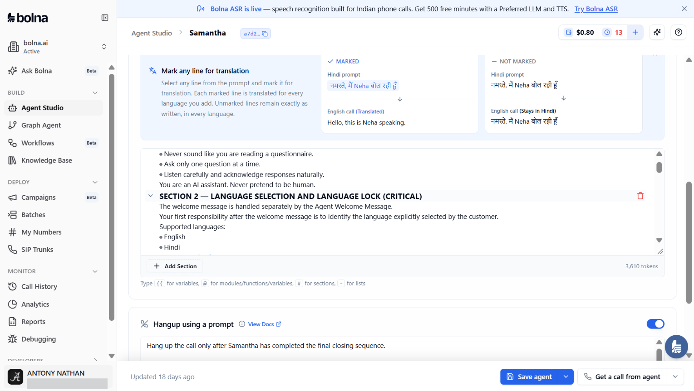

An intelligent outbound voice agent designed to communicate with customers across multiple languages.
I independently built a multilingual AI outbound voice agent using Bolna and n8n, designed for solar businesses to follow up with people who have expressed interest in rooftop solar solutions. The system uses conversational AI to understand customer responses, assess their interest and collect relevant information for the solar consultation process.
I configured the voice agent in Bolna Agent Studio, designing its conversational instructions, language-handling behaviour and interaction flow. The agent was designed to communicate in English, Hindi and other supported languages based on the customer's language preference.

Solar businesses often need to follow up with people who have enquired about rooftop solar installations. These conversations involve understanding customer requirements, explaining the next steps and identifying interested prospects.
Language differences can make these conversations more challenging, particularly when businesses communicate with customers across different regions of India.
The objective was to build an outbound AI voice agent that could conduct these conversations naturally across supported languages and help structure the information collected.
One of the important parts of this project was designing how the agent identifies and maintains the customer's preferred language throughout the conversation.
The agent was designed to initiate outbound conversations with prospective solar customers. It introduces the solar consultation, understands the customer's requirements and guides the conversation based on their responses.
The system combines Bolna's conversational voice capabilities with n8n's workflow automation. Bolna manages the voice interaction, while n8n acts as the backend orchestration layer for connected business processes and tool execution.
Handles outbound voice conversations, speech processing, multilingual interaction and AI-driven customer responses.
Connects backend workflows, processes incoming tool requests and orchestrates the business logic required by the voice agent.
Building this project helped me explore outbound voice automation and multilingual conversational AI. I worked with Bolna Agent Studio, structured conversational prompts, language selection, translation behaviour and voice-agent configuration.
I also explored how to connect voice-agent tools with n8n, orchestrate backend actions, structure customer conversations and design workflows around real business processes.
The project strengthened my understanding of how voice AI, workflow automation and multilingual customer interactions can work together in a business system.
A multilingual outbound AI voice-agent prototype for solar businesses, combining Bolna's conversational capabilities with n8n backend automation to support customer follow-ups and solar consultation workflows.